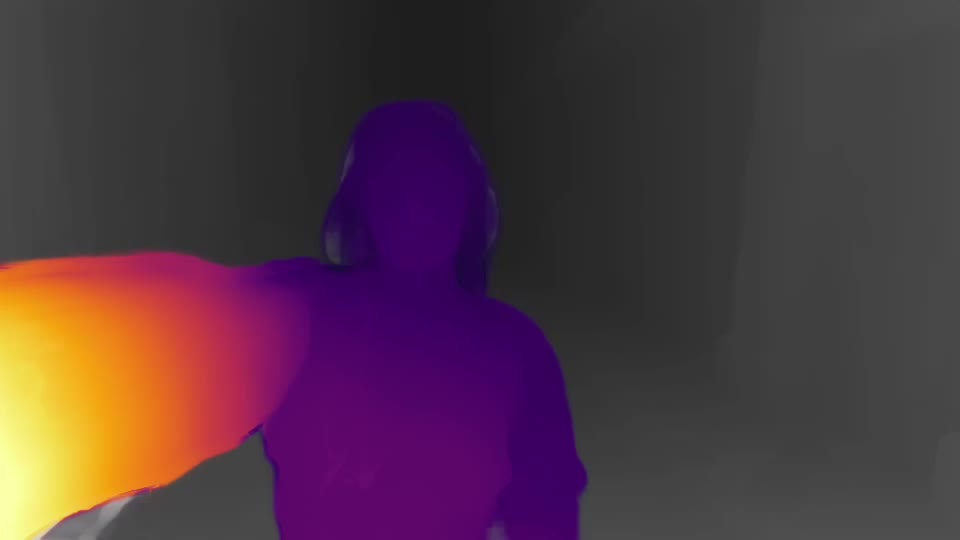
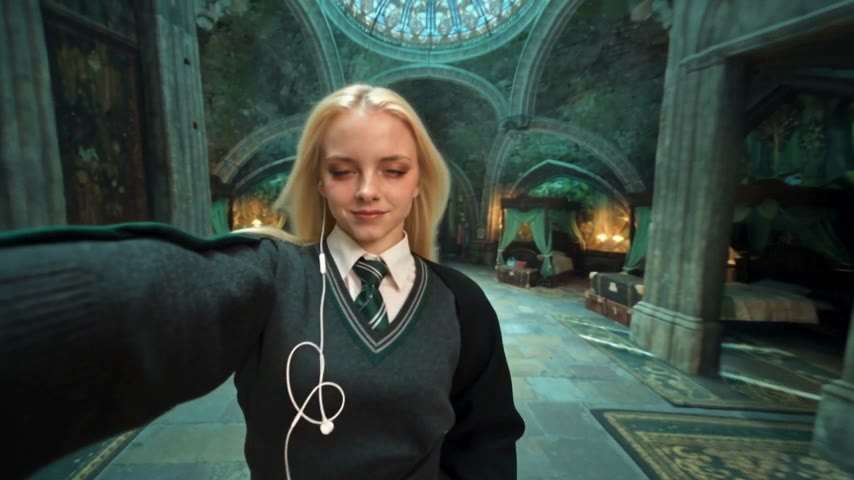

Step 6 Build the control video
Seedance sees the motion, not the person
The person you replace is painted with depth. Seedance redraws only that: same camera, same timing, a different person. Here the place is replaced too.
Your clip
→

@Video1 · control→

Seedance draftVocals only, +3 semitonesfor lip sync, never as the voice
- A silhouette from the skeleton, not the clothes, so a robe has room.
- One depth scale per shot: no flicker.
- Nothing of the performer carries over: the sunglasses are gone.
- New place: the rest in grey depth, plus a photo of the place.
Depth Anything V2 · Core MLCore ImageAUSoundIsolationOn your Mac · free
 Swapjutsu
Swapjutsu